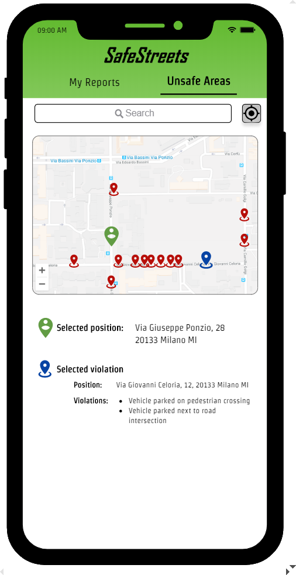
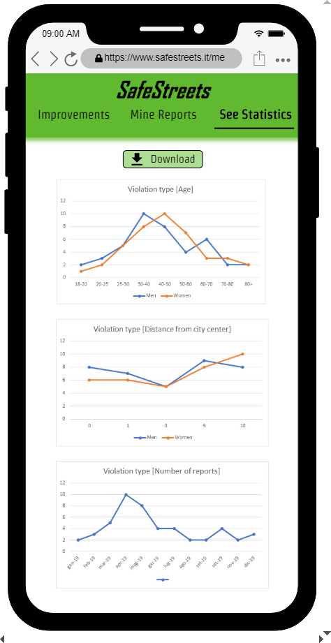
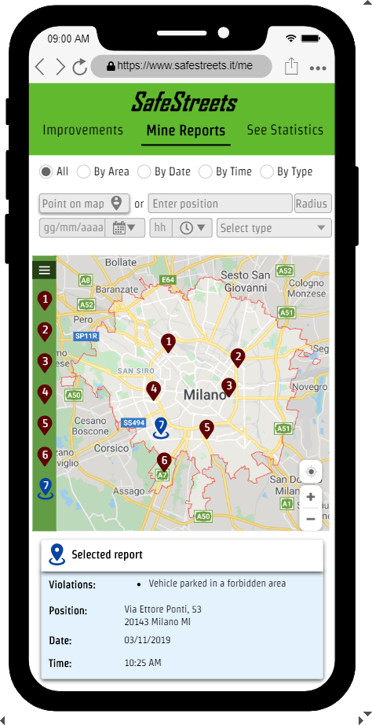
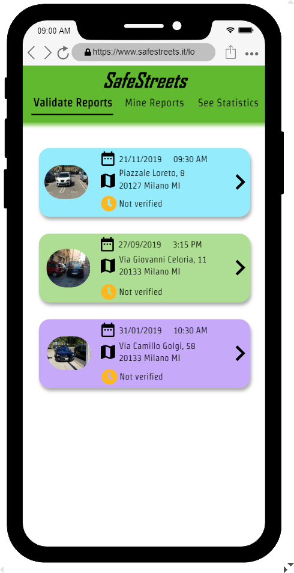
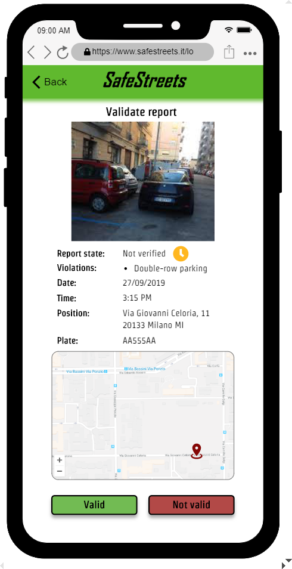
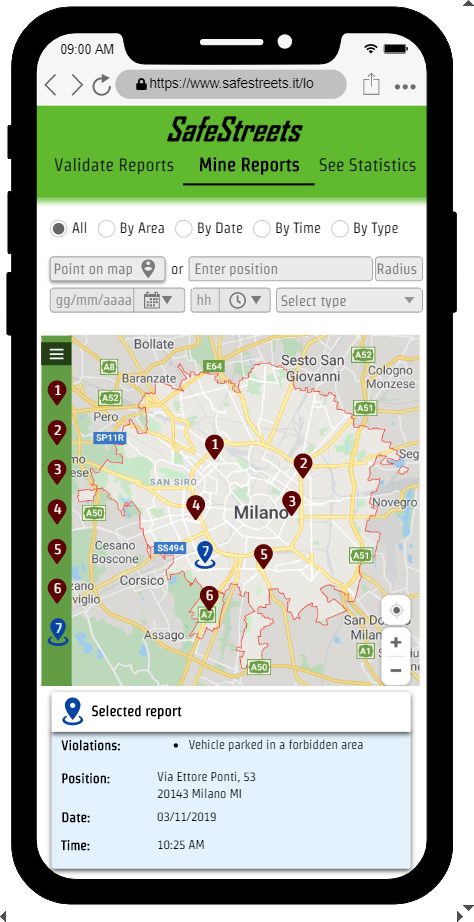
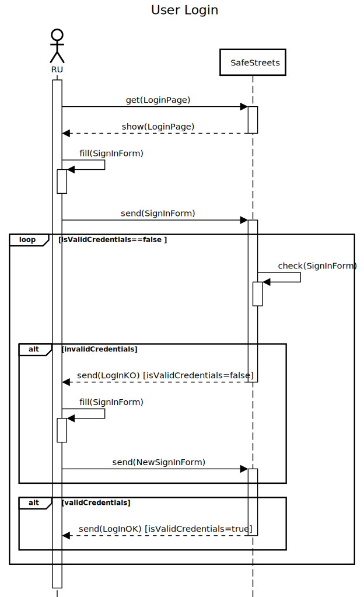
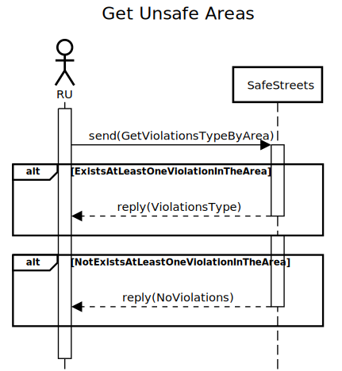
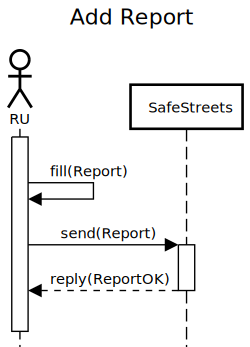
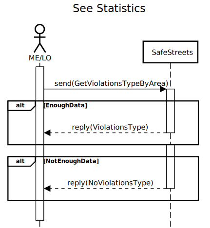

SafeStreets is a crowd-sourced application that wants to provide users with the possibility to notify authorities when parking violations occurs. The application will allow users to send pictures of violations, including their date, time, and position. Then authorities will be able to check, validate and eventually use those data for issuing tickets. To achieve this objective a number of goals have been identified, this vital aims will have to be met before the release of the product.
In short the S2B will satisfy the following goals:
This document represents the Requirement Analysis and Specification Document (RASD). The aim of this document is to completely describe the system in terms of functional and non-functional requirements, analyze the real needs of the users in order to model the system, show the constraints and the limit of the software and indicate the typical use cases that will occur after the release. This document is addressed to the developers who have to implement the requirements and could be used as a contractual basis.
This service is born from the idea that social responsibility on the street can be achieved with the help of everyday citizens. Such objective is achievable by giving good-willed people the possibility to record parking violations that they spot on the street, and making them visible to the authorities later. To this kind of people, regarded as unregistered users before their subscription to the service, the choice of signing up is given.
When an unregistered user signs up, he/she will become a registered user, able to login whenever desired. A logged in registered user, to employ the functionalities of the system, must have at least a mobile phone with camera and a GPS localization system, otherwise the product won't be available for use. With the minimum requirements satisfied the user will be able to compile and send reports of the parking violations and, if interested, search in a selected area for violations that will be showed as dots on an interactive map provided by the map service. Each report will be composed by the type of the violation, i.e. "vehicle parked in a forbidden area", by a picture of the vehicle with its license plate highlighted, that will be later recognized and added to the report with an OCR service, by the date, hour and position where the picture has been taken. Registered users will also be able to see their past reports that, if the authority has already judged them as genuine, will be recognized as valid and highlighted with a green check. Invalid reports will be recognizable by a red cross and reports which evaluation is still pending will be represented by a yellow clock.
The authorities, embodied by the municipal employees and local officers, will be able to retrieve data from the system using any available device capable of connecting to the internet and running a browser. In particular both the municipal employees and the local officers will be able to extract the reports sent by the users as one or more reports, choosing time, date, area or type of violation. If a group of reports has been chosen they will be showed in the same kind of way as a user, as dots on a map, but a higher number of information will be made available. Furthermore both the municipal employees and the local officers will be able to retrieve statistics, derived from data collected by the system. The system data is collected with the registered users's reports, along the ticket and accident information possessed by the municipality. If the authority possesses such data, it will be retrieved via a ticket service, that will fetch date, time, position and violation type of the vehicle found committing the infraction, and a municipal accident service, that will recover information about road accidents, such as the date, time and the vehicles involved in the accident. Moreover the municipal employee, by selecting a position, will be able to search for possible improvements on such position, to see what kind of interventions should be made, and, if some of them have already been completed, he/she can change their status from "not done" to "done", a "done" improvement won't be shown again.
The last functionality is dedicated to the local officers: after having withdrawn a report, the local officer is able to check the its validity, and eventually utilize its data to fine the vehicle that committed the violation.
For a precise description of RU, ME and LO see paragraph 2.3.
The RASD document is composed by six chapters, as outlined below:
The product will be developed from scratch and will be organized in two different macro-entities, one dedicated to the normal user, the other dedicated to the authorities, that may be MEs or LOs (for more information on the users see section 2.3). The two parts will be differentiated to satisfy different needs of different parties that will employ SafeStreets. Their form, along with the one of some other parts of the system, is represented with the following high level class diagram.
Some of the entities of the class diagram evolve, assuming different states, while the system is being used. The following diagrams show those states that will be found.
This diagram does not have an end state because, once a user has been correctly registered in the system, its presence in the system will ideally never disappear.
This diagram contains all the states that the system will assume while a user creates a report. Not all of the transitions are caused by the user, in fact in the "Impending GPS localization" state the system will independently retrieve the location, is possible also to notice that in this state, unlike all the others, both the abort and go back transitions are missing. Thanks to the domain assumptions (see paragraph 2.4) the system will never be stuck on the "Impending GPS localization" state, giving only to the user the choice of reaching one of the two final states.

This diagram represents the state of a report from when it is received by the system to the evaluation of a LO. When a report arrives to the system, the license plate, that has been already highlighted by the user, will be run through the OCRS, if the plate is regarded as illegible the report will be automatically regarded as not valid, otherwise the choice of the final state of the report will be taken by the LO.

This diagram contains the states of an improvement from when is framed to when it is completed. Is possible that some of the improvements will never be completed, remaining forever in the not done state, but if one is indeed finished, and set as done by a ME, it will be discarded and never shown again (only on the street where it was proposed).

| Phenomenon | Shared | Who Controls It |
|---|---|---|
| UU inserts its credentials | Y | W |
| S2B checks UU credentials | N | M |
| RU/ME/LO logs in | Y | W |
| S2B checks RU/ME/LO credentials | N | M |
| RU wants to add a report | N | W |
| RU takes a picture of the violation | Y | W |
| RU choose the type of violations | Y | W |
| RU sends a report | Y | W |
| S2B registers a report | N | M |
| RU wants to request its reports | N | W |
| RU requests its reports | Y | W |
| RU asks the S2B for seeing reports by area | Y | W |
| S2B selects the reports for the RU | N | M |
| S2B provides RU with requested reports | N | M |
| ME/LO wants to mine reports | N | W |
| ME/LO chooses the way of mining reports | Y | W |
| ME/LO asks the S2B for the mining | Y | W |
| S2B selects the reports for the ME/LO | N | M |
| S2B provides ME/LO with requested reports | Y | M |
| ME/LO wants to retrieve statistics | N | W |
| ME/LO asks the S2B for statistics | Y | W |
| S2B crunches statistics for the ME/LO | N | M |
| S2B provides ME/LO with statistics | Y | M |
| ME wants go get the possible improvements | N | W |
| ME asks the S2B for possible improvements | Y | W |
| S2B finds possible improvements for the ME's municipality | N | M |
| S2B provides ME with the possible improvements | Y | M |
| ME marks an improvement as done or not done | Y | W |
| S2B changes the status of the improvement as done or not note | N | M |
| LO wants to validate one or more reports | N | W |
| LO asks the S2B for validating reports | Y | W |
| S2B provides LO with the reports the reports to be verified | Y | M |
| LO marks a report as valid or not valid | Y | W |
| S2B changes the status of the report as valid or not valid | N | M |
In this section the most important functions of the system are reported.
The core of the system revolves around the management of the reports. Reports, that are structures that contains information about a violation, are created and then saved in the system with an "add" function. The "add" function builds the report, assembling the picture of the car that has committed a violation, with its license plate, date and time, GPS location, and violation type, sending it to SafeStreets at the end of the procedure. When a report is received, the system checks if the license plate is readable, if not the report is discarded as "not valid", otherwise a set of possible operations becomes available. These operations are the "validate" and "mine" functions. The "validate" function shows every stored report, which status is set as "to be verified", with all the information listed above, and permits to change their status to "valid", if the report is considered legit, or "not valid", in the opposite case. The "mine" functions finds the report type, of existing valid reports, searching in the system using type, date, time or area as parameters for the query.
Using both data provided by the authorities and the data owned by SafeStreet is possible to identify the unsafe areas of a Municipality.
Using the improvement function makes it possible to determine feasible solutions that can be used to improve the safety of such areas, i.e. add a barrier
between the bike lane and the part of the road for motorized vehicles to prevent unsafe parking.
With the information, about issued tickets and accidents that happened on the street, retrievable from the Authorities, and SafeStreets' own data, is possible to build statistic about the violations and the perpetrators who cause them. Some examples of these statistics can be seen in section 3.3.1 in the Local Officer paragraph.
There are three kind of users that will employ this product:
User: the normal, every day citizen that has subscribed to SafeStreets and recognized as RU. The RU is able to compile and send reports, see the chronology of his reports and search for violations in a selected area. Other functions will not be accessible by the user to protect privacy of other people, not necessary others RU, and to avoid providing excessive useless data to RU.
Municipal Employee: the ME is someone hired from the municipality to which the task of accessing information,on behalf of the authorities, will be given. To such kind of individuals, a unique username and password will be provided, already linked to an account able to utilize all functions dedicated to the retrieval of data. A ME is unable to add or modify the status of any reports, but is able to change the status of an improvement from "not done" to "done".
Local Officer: The LO is part of the law enforcement of the municipality. As the ME, the LO receives his own account information from the municipality that will permit him/her to utilize all the functions to retrieve data. Unlike the ME, the LO is able to modify the state of a report but is unable to do so with an improvement. An LO may, or may not, utilize the data stored by SafeStreet to write tickets for the cars that committed a violation
To assure the correct formulations of the requirements, and avoid unforeseen events, a certain amount of the world phenomena is considered as follows.
The following mockups give an approximate idea of how the applications interfaces should appear.










The system has no hardware interface.
The system does not offer any APIs to external applications for its usage.
The system does not offer any APIs to external applications for communication.
Cat has a disabled child. Tired from everybody that leave their car in the disables parking lot, Cat decides to download and install SafeStreets app. After subscribing to the service, she starts to take pictures of all the perpetrators cars. Sometime after, Cat notices that her reports are getting validated and along with that the number of times that she founds cars in the disabled parking lot start to diminish, that may be because the local police intervened and ticketed them.
Ned is looking for a house in the city, he has always lived in the countryside and hes scared of the possibility to live in areas with difficulty in finding car parks. He opens SafeStreets and using Get Reports By Area he can find the worst areas in the city and he can avoid them, looking for a house with confidence.
Jon has the reputation of not being a trustworthy guy. When he decides to use SafeStreets, Jon starts to report every car that he does not like, hoping that the owners of those car will receive a ticket. Luckily for the owners, those report wont incur in any fine because the local police is able to validate the received reports and does not issue the cars in order, ignoring Jons report.
Martha works as a municipal employee. The mayor asks her to make a list all possible investment to develop the streets of the city, in order to increase the street security. Luckily for Martha, SafeStreets with its function "Get Improvements", highlights the most unsafe areas and suggests possible interventions. Reading these recommendations, Martha realizes that some of them have already been done so she diligently set them as completed with the Notify Improvement. Martha can now finish her assignment quickly and can dedicate more of her time to do nothing, she works for the municipality after all.
The mayor, to promote his image before the next elections, wants to publish a report with the statistics regarding public security. With SafeStreets his secretary can easily retrieve such information, and prepare a detailed report with all the areas where public street security has improved during the mayors mandate.
A group of citizens is concerned with the street security of their neighborhood but they dont have much real data that can be used to support their concerns. They go to the municipality to ask for more information and possibly an interventions of the authorities. The municipality can quickly for search for data regarding their area and forward it higher authorities that will hopefully do something.
A local officer in patrol is tasked to give fines during his work shift but usually this isnt such an easy task. Normally he would spend a lot of time searching the usual street but, using SafeStreets, he can now retrieve reports about positions of parking violations using Mine Report function. With these information the local officer starts the search. Luckily for him, he finds a lot of violations in the streets specified by SafeStreet, so he can proceed and charge the owners of those cars for their sins (violations).
Name |
Sign-Up |
Actors |
Unregistered User |
Entry Conditions |
The UU is already on the Log-In page. |
Event Flow |
|
Exit Conditions |
The UU becomes now a RU. From now on he/she can Log-In into the application and use SafeStreets service. |
Exceptions |
In the case 1 an error message is displayed, saying "Credentials already in use, please Log-In", and the UU is taken back to the Log-In page. |
Name |
Registered User Log-In |
Actors |
Registered User |
Entry Conditions |
The RU is already on the Log-In page. |
Event Flow |
|
Exit Conditions |
The RU is successfully redirected to the corresponding home page. |
Exceptions |
In the case 1 an error message is displayed, saying "Wrong Credentials", and the RU is taken back to the point 1. |
Name |
Add Report |
Actors |
Registered User, OCR Service |
Entry Conditions |
The RU has logged in and is in the home page, which is the "Get My Reports" page |
Event Flow |
|
Exit Conditions |
The RU successfully uploads a new report into the system. Then he/she is taken back to the home page. |
Exceptions |
There are no exceptions under the given domain assumptions. |
Name |
Get My Reports |
Actors |
Registered User, Map Service |
Entry Conditions |
The RU has logged in and is in the home page, which is "Get My Reports" page. |
Event Flow |
|
Exit Conditions |
The RU successfully gets his/her reports and is able to navigate through them. |
Exceptions |
The case 1 is handled by showing only the "Add Report" button. |
Name |
Get Violations Type By Area |
Actors |
Registered user, Map Service |
Entry Conditions |
The RU has logged in and is in the home page, which is the "Get My Reports" page. |
Event Flow |
|
Exit Conditions |
The RU now is able to browse on the map between violations and see their type. |
Exceptions |
In the case 1 an error message is displayed, saying "Invalid address", and the RU is taken back to the point 2. |
Name |
Authority Log-In |
Actors |
Municipal Employee, Local Officer |
Entry Conditions |
The ME/LO is already on the Log-In page. |
Event Flow |
|
Exit Conditions |
The ME/LO is successfully redirected to the home page. |
Exceptions |
In the case 1 an error message is displayed, saying "Invalid credentials", and the ME/LO is taken back to the point 1. |
Name |
Get Improvements |
Actors |
Municipal Employee, Municipal Accident System, Map Service |
Entry Conditions |
The ME has logged in and is in the home page. |
Event Flow |
|
Exit Conditions |
The ME can browse through all the possible improvements in his/her municipality. |
Exceptions |
In the case 1 an error message is displayed, saying "There is not enough data to generate improvements", and the ME/LO is taken back to the home page. |
Name |
See Statistics |
Actors |
Municipal Employee, Local Officer, Ticket Service |
Entry Conditions |
The ME/LO has logged in and is in the home page. |
Event Flow |
|
Exit Conditions |
The ME/LO successfully receives the statistics provided by the system. |
Exceptions |
In the case 1 an error message is displayed, saying "There is not enough data to create statistics", and the ME is taken back to the home page. |
Name |
Mine Reports By Type |
Actors |
Municipal Employee, Local Officer, Map Service |
Entry Conditions |
The ME/LO has logged in and is in the home page. |
Event Flow |
|
Exit Conditions |
The ME/LO is able to search through the violations and see where and when they happened. |
Exceptions |
In the case 1 an error message is displayed, saying "There are no Violations to be displayed", and the ME/LO is taken back to the home page. |
Name |
Mine Reports By Date |
Actors |
Municipal Employee, Local Officer, Map Service |
Entry Conditions |
The ME/LO has logged in and is in the home page. |
Event Flow |
|
Exit Conditions |
The ME/LO is able to search through the violations and see where they happened. |
Exceptions |
In the case 1 an error message is displayed, saying "There are no Violations to be displayed", and the ME/LO is taken back to the home page. |
Name |
Mine Reports By Time |
Actors |
Municipal Employee, Local Officer, Map Service |
Entry Conditions |
The ME/LO has logged in and is in the home page. |
Event Flow |
|
Exit Conditions |
The ME/LO is able to search through the violations and see where they happened |
Exceptions |
In the case 1 an error message is displayed, saying "There are no Violations to be displayed", and the ME/LO is taken back to the home page. |
Name |
Mine Reports By Area |
Actors |
Municipal Employee, Local Officer, Map Service |
Entry Conditions |
The ME/LO has logged in and is in the home page. |
Event Flow |
|
Exit Conditions |
The ME/LO is able to search through the violations and see when they happened |
Exceptions |
In the case 1 an error message is displayed, saying "There are no Violations to be displayed", and the ME/LO is taken back to the home page. |
Name |
Validate Reports |
Actors |
Local Officer, Ticket Service |
Entry Conditions |
The LO has logged in and is in the home page. |
Event Flow |
|
Exit Conditions |
The LO is able to browse through the reports and validate or invalidate them |
Exceptions |
In the case 1 an error message is displayed, saying "There are no Reports to be displayed", and the LO is taken back to the home page. |




In this section we show that the requirements ensure the satisfaction of the goals in the context of the domain assumptions: the list of requirements and domain assumptions under each goal have this purpose.
The following table keeps track of the relation between Use Cases and Requirements
| Use Cases | Requirements |
|---|---|
| Sign-Up | [R1] |
| Registered User Log-In | [R4] |
| Add Report | [R5],[R6],[R7],[R8],[R9],[R10],[R11],[R12],[R13],[R14] |
| Get My Reports | [R15] |
| Get Violations Type By Area | [R16],[R17] |
| Authority Log-In | [R2],[R3] |
| Get Improvements | [R23],[R24],[R25],[R26] |
| See Statistics | [R20],[R21],[R22] |
| Mine Reports By Type | [R18],[R19] |
| Mine Reports By Date | [R18],[R19] |
| Mine Reports By Time | [R18],[R19] |
| Mine Reports By Area | [R18],[R19] |
| Validate Reports | [R27] |
The system does not have any particular performance requirements. Obviously it will have to be able to handle multiple operation from multiple clients (users and authorities) at same time.
The system adopts the current traffic rules in order to provide all the possible VTs.
The system presents hardware requirements only on the user's side. As a matter of fact the user is required to have a smartphone with a camera and internet connection (wifi or mobile). Authorities need at least a device capable of connecting to the net.
In order to provide reliability, the system must be resilient to faults. The solution is to replicate the system's server. In particular it will be fault tolerant against Byzantine faults (faults where a disconnected system has unforeseeable behaviours) , so the number of replicas of the system's server must be, at least, (3*number of failing replicas)+1 , with the number of failing replicas decided during the design and implementation.
In order to provide availability, as mentioned in the reliability section, the system's server must be replicated. In this way it is possible to obtain a 24/7 service. Obviously little deviations from this requirements will be accepted.
In order to provide security, both users and authorities data will be always transferred trough encrypted channels. In particular every report, sent by the user, is provided with a digital signature, in order to maintain the chain of custody from the user up to the authorities.
In order to provide maintainability, the development of the system have to be done so that will be easy and cheap to fix and modify it in the future. In order to achieve these properties, appropriate design patterns will be used. More of this in the design document.
In order to provide portability, the system will be available as a downloadable app for the user and as a web service for the authorities.
-------------- SIGNATURE ------------------
sig Position {
latitude: one Int,
longitude: one Int,
municipality: one Municipality
}
sig Municipality {
name: one String,
center: one Position,
reports: set Report,
accidents: set Accident,
tickets: set Ticket
}
sig Picture {}
-- It represents the violation type that can be associated to a report
abstract sig ViolationType {}
-- It represents the set of violation associated to a report
-- In each report there must be at least one type of violation
sig Violation {
violations: some ViolationType
}
sig Date {}
sig Time {}
sig Vehicle {
licensePlate: one String
}
abstract sig RegisteredEntity {
username: one String,
password: one String
}
abstract sig Authority extends RegisteredEntity {
municipality: one Municipality
}
sig User extends RegisteredEntity
{
email: one String,
reports: set Report
}
sig LocalOfficer extends Authority {}
sig MunicipalEmployee extends Authority {}
abstract sig ReportStatus {}
one sig Valid extends ReportStatus {}
one sig NotValid extends ReportStatus {}
one sig NotVerified extends ReportStatus {}
sig Report {
vehicle: lone Vehicle,
segnalatingUser: one User,
position: one Position,
picture: one Picture,
violation: one Violation,
date: one Date,
time: one Time,
status: one ReportStatus
}
abstract sig ImprovementState {}
one sig NotDone extends ImprovementState {}
one sig Done extends ImprovementState {}
abstract sig ImprovementType {}
sig Improvement {
type: one ImprovementType,
position: one Position,
state: one ImprovementState
}
sig Accident {
position: one Position,
date: one Date,
time: one Time,
vehicles: some Vehicle
}
abstract sig Gender {}
one sig Male extends Gender {}
one sig Female extends Gender {}
sig Ticket
{
vehicle: one Vehicle,
violation: one Violation,
position: one Position,
date: one Date,
time: one Time,
offenderGender: one Gender,
offenderAge: one Int,
report: lone Report
}
{
-- Offender must be adult (age >= 18), but here used scaled value for simplicity
offenderAge >= 3
-- if a ticket is related to a report, this must be valid
report.status = Valid
}
-------------------- FACT -----------------------------
-- Each username is unique
fact UniqueUsername
{
no disj u1,u2: RegisteredEntity | u1.username = u2.username
}
-- Each vehicle is unique and is associated to a unique license plate
fact UniqueVehiclePlate
{
no disj v1,v2: Vehicle | v1.licensePlate = v2.licensePlate
}
-- Each municipality name is unique
fact UniqueMunicipalityName
{
no disj m1, m2: Municipality | m1.name = m2.name
}
-- Email used for registration must not be associated to multiple users
fact UniqueEmail
{
no disj u1, u2: User | u1.email = u2.email
}
-- There must not be positions with same coordinates belonging to different municipalities
fact SamePositionSameMunicipality
{
no disj p1, p2: Position |
p1.latitude = p2.latitude &&
p1.longitude = p2.longitude &&
p1.municipality != p1.municipality
}
-- The position associated to a municipality center must belong to such municipality
fact CenterInMunicipality
{
all m: Municipality | m.center.municipality = m
}
-- Each picture must belong exactly to one report
fact AllPictureBelongToOneReport
{
all p: Picture | one r: Report | r.picture = p
}
-- A vehicle can not be reported simultaneously in different reports with different positions,
-- but it can be reported in the same position, for example from different users
fact NoVehicleUbiquityInReport
{
no disj r1, r2: Report |
r1.date = r2.date &&
r1.time = r2.time &&
r1.vehicle = r2.vehicle &&
r1.position != r2.position
}
-- A user can not make different reports simultaneously
fact OneReportPerTimeForUser
{
no disj r1, r2: Report |
r1.segnalatingUser = r2.segnalatingUser &&
r1.date = r2.date &&
r1.time = r2.time
}
-- A vehicle can not be involved in an accident and simultaneously be reported in a different position
fact NoVehicleUbiquityBetweenReportAccident
{
no r: Report, a: Accident |
r.vehicle in a.vehicles &&
r.date = a.date &&
r.time = a.time &&
r.position != a.position
}
-- A vehicle can be involved in at most one accident per time
fact NoVehicleUbiquityInAccident
{
no disj a1, a2: Accident |
a1.date = a2.date &&
a1.time = a2.time &&
a1.position != a2.position &&
a1.vehicles & a2.vehicles != none
}
-- There must not be multiple accidents involving the same vehicles (or a part of them)
-- in the same position and at the same time and date
fact UniqueAccident
{
no disj a1, a2: Accident |
a1.date = a2.date &&
a1.time = a2.time &&
-- a1.position = a2.position &&
(a1.vehicles = a2.vehicles || a1.vehicles & a2.vehicles != none)
}
-- There must not be duplicated suggestion for improvements on same position
fact UniqueImprovementForEachPosition
{
no disj i1, i2: Improvement |
i1.position = i2.position &&
i1.type = i2.type
}
-- A suggested improvement for a position must be generated only if there occurred an accident or a valid report
fact NoImprovementWithoutProblem
{
no i: Improvement |
((no a: Accident | i.position = a.position) &&
(no r: Report | r.position = i.position && r.status = Valid))
}
-- If on one position there occurred at least a minimum number of accidents or valid reports,
-- there must be a suggested improvement for that position
-- For simplicity, the minimum number of "problems" occurred on a position in order to have a suggested improvement is set to one
fact NoProblematicPositionWithoutImprovement
{
no p: Position |
(((some a: Accident | a.position = p) ||
(some r: Report | r.position = p && r.status = Valid)) &&
no i: Improvement | i.position = p)
}
-- If the OCRs did not recognize a valid license plate, the report is not valid but is still stored
-- Some "Not Valid" reports can be associated to a vehicle: it might happen that a local officer
-- marked them as "Not Valid" but the vehicle's license plate had been recognized by the OCRs
fact NotValidReportsStored
{
all r: Report |
r.vehicle = none implies r.status = NotValid
}
--If the OCRs recognized a valid license plate, the related vehicle must be associated to the report
fact ValidReportsRelatedToAVehicle
{
all r: Report |
r.status != NotValid implies r.vehicle != none
}
-- All strings must be associated to a username, to a municipality name or to a license plate
fact NoRandomString
{
all s: String |
((one e: RegisteredEntity | e.username = s) ||
(one m: Municipality | m.name = s) ||
(one v: Vehicle | v.licensePlate = s))
}
-- If a ticket is related to a valid report, they must be consistent
fact TicketReportConsistency
{
all t: Ticket |
(t.report != none implies
(t.position = t.report.position &&
t.vehicle = t.report.vehicle &&
t.date = t.report.date &&
t.time = t.report.time &&
t.violation.violations & t.report.violation.violations != none))
}
-- There must be a unique issued ticket for a vehicle on a specific date and time
fact UniqueTicket
{
no disj t1, t2: Ticket |
t1.vehicle = t2.vehicle &&
t1.date = t2.date &&
t1.time = t2.time
}
-- A vehicle can not be issued in a ticket and simultaneously be reported in a different position
fact NoVehicleUbiquityBetweenReportTicket
{
no r: Report, t: Ticket |
r.vehicle in t.vehicle &&
r.date = t.date &&
r.time = t.time &&
r.position != t.position
}
-- A vehicle can not be involved in an accident and simultaneously be issued in a different position
fact NoVehicleUbiquityBetweenTicketAccident
{
no t: Ticket, a: Accident |
t.vehicle in a.vehicles &&
t.date = a.date &&
t.time = a.time &&
t.position != a.position
}
-- Each municipality must have only reports occurred in a position belonging to that municipality
fact MunicipalityOwnsOnlyItsReports
{
all m: Municipality |
(m.reports != none implies
(all r: m.reports | r.position.municipality = m))
}
-- All reports must be associated to a municipality
fact AllReportsRelatedToMunicipality
{
all r: Report |
(one m: Municipality | r in m.reports)
}
-- Each user must have only his/her reports
fact UserOwnsOnlyItsReports
{
all u: User |
(u.reports != none implies
(all r: u.reports | r.segnalatingUser = u))
}
-- All reports must be associated to a the segnalating user
fact AllReportsRelatedToUser
{
all r: Report |
(one u: User | r in u.reports)
}
-- Each municipality must have only accidents occurred in a position belonging to that municipality
fact MunicipalityOwnsOnlyItsAccidents
{
all m: Municipality |
(m.accidents != none implies
(all a: m.accidents | a.position.municipality = m))
}
-- All accidents must be associated to a municipality
fact AllAccidentsRelatedToMunicipality
{
all a: Accident |
(one m: Municipality | a in m.accidents)
}
-- Each municipality must have only accidents occurred in a position belonging to that municipality
fact MunicipalityOwnsOnlyItsTickets
{
all m: Municipality |
(m.tickets != none implies
(all t: m.tickets | t.position.municipality = m))
}
-- All tickets must be associated to a municipality
fact AllAccidentsRelatedToMunicipality
{
all t: Ticket |
(one m: Municipality | t in m.tickets)
}
----------------------- ASSERTION ------------------------------
-- There are no municipalities with centers in the same position
assert NoOverlapMunicipalityCenter
{
no disj m1, m2: Municipality | m1.center = m2.center
}
check NoOverlapMunicipalityCenter
---------------------- PREDICATE --------------------------------
pred addReport [m, m': Municipality, u, u': User, r: Report]
{
//precondition
r.segnalatingUser = u
r.position.municipality = m
//postcondition
u'.reports = u.reports + r
m'.reports = m.reports + r
}
-- Generic world
pred GenericWorld
{}
-- World to highlight municipality
pred MunicipalWorld
{
#Municipality = 3
}
-- World to highlight reports
pred UserWorld
{
#User = 4
#Report = 5
#Position = 3
one r: Report | r.status = Valid
one r: Report | r.status = NotValid
}
run GenericWorld for 3 but exactly 3 String
run MunicipalWorld for 5 but exactly 9 String, 3 Municipality
run UserWorld for 6 but exactly 10 String, 0 Accident
run addReport for 3 but exactly 5 String
This is an example of a generic world
This world highlights the associations occurring into a municipality, such as received reports, issued tickets, occurred accidents and suggested improvements. It also shows how positions are related to municipalities and what occurred on them.
This world highlights the associations between users and reports.
It shows how a "add report" event occurred
| Student | Time spent (h) |
|---|---|
Bonatti Andrea |
|
Buttironi Monica |
|
Caruso Marco Giuseppe |
|